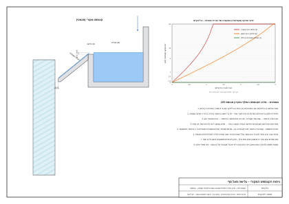
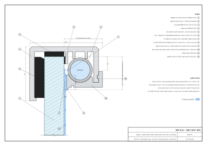
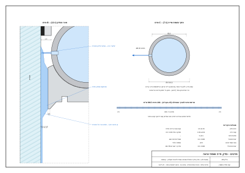
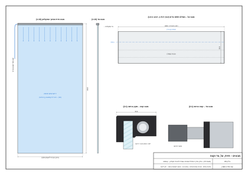
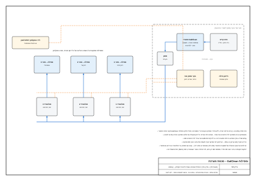

הרעיון בר־ביצוע, אך לא בגאומטריה שהוצעה. גלישה מעל סף רציף רגישה מדי לפילוס בספיקות של 2–4 ל'/דק'. התכנון המומלץ מחלק את המים באמצעות מפל לחץ בפיות זעירות, ומוציא אותם מסדק נימי שהזכוכית עצמה היא אחת מדפנותיו. הגורם שיכריע אם תיווצר יריעה רציפה הוא מצב פני הזכוכית, לא המסילה.
עומד הגלישה הוא 0.69 מ"מ בלבד (1.1 מ"מ ב-4 ל'/דק'). לאחידות ±10% נדרש פילוס של ±0.05 מ"מ לאורך מטר. הטיה של 1 מ"מ גורמת לפער של פי 20 בין הקצוות.
101 פיות Ø0.5 יוצרות מפל של 3.4 kPa. הטיה של 10 מ"מ משנה את הספיקה בכ-1.4%. אין צורך במנגנון פילוס. המים יוצאים כשהם כבר על הזכוכית.
ב-2 ל'/דק'/מ' יריעה רציפה נשמרת רק אם זווית המגע הנסוגה קטנה מ-17° בערך. ב-4 ל'/דק' עד כ-30°. על זכוכית עם ציפוי דוחה מים (θ≈100°) יריעה רציפה אינה אפשרית בספיקות האלה.
מערכת RO ביתית מייצרת 0.13–0.26 ל'/דק'. כדי לספק 2 ל'/דק' נדרש מיכל אגירה ומשאבת 24V, או RO בזרימה ישירה של 600 GPD ומעלה. צריכה לשטיפה: כ-1.5 ל'.
מה השתנה לעומת הרעיון המקורי: נשמרו העקרונות של קו שחרור רציף, היעדר סילונים חשופים ומסילה עצמאית שמותקנת על זכוכית קיימת. השתנה המנגנון שקובע את חלוקת המים. במקום גובה מפלס מעל סף (גרביטציה, רגישות של כ-220% למ"מ), החלוקה נקבעת במפל לחץ בפיות (רגישות של כ-0.15% למ"מ). בנוסף, במקום שפה קשיחה שמנסה לשמור מרווח קבוע מהזכוכית, הזכוכית עצמה היא הדופן הפנימית של הסדק. כך מתבטלת הבעיה של קשת הזכוכית, שיכולה להגיע ל-3 מ"מ למטר.
ההבחנה בין סוגי המסקנות מסומנת לאורך הדוח: תאורטי הוא תוצאה של חישוב או מודל מקובל. דורש ניסוי מסמן הנחה שאין לה אישוש מספיק בלי מדידה. חישוב פשוט מסמן תוצאה שאין סיבה לפקפק בה.
הדמיה בזמן אמת מתוך אותן קואורדינטות של קובצי ה-CAD. עובי היריעה מוגדל לצורך המחשה. במבט החתך: הסילונים יוצאים מהסעפת אופקית, פוגעים בזכוכית בתוך הסדק, והמים יוצאים מתחת לשפת הסכין כיריעה על הזכוכית.
| פרמטר | ערך | מקור / הערה |
|---|---|---|
| ספיקה | 2 L/min (1–6 נבדק) | דרישת הלקוח; 4 ל'/דק' כחלופה |
| ספיקה ליחידת רוחב Γ | 0.033 kg/m·s | 2 ל'/דק' על 1 מ' |
| מים | 25°C, σ=0.072 N/m, μ=0.89 mPa·s | RO/DI; סבון על הזכוכית מוריד σ מקומית |
| אורך נימיות √(σ/ρg) | 2.71 mm | מתחת לסדר גודל זה מתח הפנים שולט |
| זכוכית | 6–12 mm, 1000×2000 | מחוסמת; קשת כללית מותרת עד 3 מ"מ/מ' (EN 12150-1) |
| TDS מי ברז | ≈450 mg/L | סדר גודל למרכז הארץ; יש למדוד באתר |
| מים שנשארים על הזכוכית אחרי ניקוז | ≈30 g/m² | הנחה דורש ניסוי |
| ספיקה ל'/דק'/מ' | עובי δ | מהירות ממוצעת | Re | זמן מעבר 2 מ' |
|---|---|---|---|---|
| 1 | 0.17 mm | 0.10 m/s | 75 | 13 s |
| 2 | 0.21 mm | 0.16 m/s | 149 | 8.4 s |
| 4 | 0.26 mm | 0.25 m/s | 299 | 5.3 s |
| 6 | 0.30 mm | 0.33 m/s | 448 | 4.0 s |
בכל התחום הזרימה למינרית־גלית (Re<1000). היריעה דקה מאוד, ולכן כוחות מתח הפנים והרטבת המשטח, ולא ההידרודינמיקה, קובעים אם היא תישאר רציפה. חישוב פשוט
ספיקה מעל סף חד: q = ⅔·Cd·√(2g)·h1.5. בספיקה של 2 ל'/דק'/מ' עומד הגלישה h הוא 0.69 מ"מ, רבע מאורך הנימיות. הספיקה המקומית פרופורציונלית ל-h1.5, ולכן כל שגיאת גובה של הסף מתורגמת ישירות לשינוי ספיקה:
| הטיית הסף לאורך 1 מ' | ספיקה מקס'/ממוצע | ספיקה מינ'/ממוצע | הערה |
|---|---|---|---|
| 0.1 mm | 1.11 | 0.89 | גבול ±10% |
| 0.5 mm | 1.57 | 0.50 | פסים בולטים |
| 1.0 mm | 2.17 | 0.11 | פי 20 בין הקצוות |
| 2.0 mm | 3.28 | 0.00 | 24% מהאורך יבש |
החישוב מתעלם ממתח פנים, ולכן הוא אופטימי. בעומד של פחות ממ"מ, זווית המגע וההיסטרזיס שלה מקבעים את קו המים על השפה. בפועל הגלישה צפויה להתחיל בנקודה הנמוכה ביותר ולהתרכז בה, כך שייווצרו פסים ולא יריעה. צפוי, דורש אימות
בעיות נוספות של הקונספט:
סף משונן (חריצי V בפסיעה של 10 מ"מ) מעלה את העומד ל-2.3 מ"מ ומקטין את הרגישות לכ-110% למ"מ. זה שיפור, אבל עדיין מחייב מנגנון פילוס מדויק לכל אורך.

| חלופה | מה קובע את החלוקה | רגישות לפילוס | יתרונות | חסרונות | הערכה |
|---|---|---|---|---|---|
| A. סף רציף ותעלה משופעת (מקורי) | גובה מפלס מעל הסף | ~220%/mm | פשוט, ללא לחץ | פילוס ±0.05 מ"מ, פסים, מים עומדים | נפסלה |
| B. סף משונן V + סדק | גובה מפלס בחריצים | ~110%/mm | אפשרי עם מיכל גרביטציה | עדיין דורש מנגנון פילוס מדויק | גיבוי |
| C. סעפת פיות בלחץ + סדק נימי צמוד־זכוכית | מפל לחץ בפיות | ~0.15%/mm | ללא פילוס, ללא מרווח קריטי, ללא מים עומדים בתא | דורש משאבה או לחץ; פיות זעירות (סינון 50 µm) | מומלצת |
| D. מפזר חריץ דק (Slot die) | רוחב החריץ | נמוכה | יריעה אחידה מאוד | ספיקה ∝ רוחב³: 10% שגיאה ברוחב = 30% בספיקה; קשה לייצור באורך מטר | נפסלה |
| E. פיות ריסוס מניפה | הפיות | נמוכה | לא תלוי בהרטבה; מתאים לזכוכית דוחת מים | התזות, אירוסול, ספיקה גבוהה, כיסוי לא אחיד, רעש | רק לזכוכית מצופה |
| F. פתיל / בד מפזר | נימיות בחומר | נמוכה | פיזור רוחבי מצוין | היגיינה, עובש, החלפה תקופתית, שינוי ספיקה עם הזמן | נפסלה למוצר |
המסילה היא כיפה שיושבת על שפת הזכוכית העליונה. היא מורכבת משלושה רכיבים עיקריים:
מסלול המים. מפל הלחץ בפיות (3.4 kPa ב-2 ל'/דק') גדול פי 20 ומעלה מכל הפרש לחץ לאורך הסעפת. לכן כל פייה מקבלת אותה ספיקה, ללא קשר לפילוס. כל סילון חוצה 3.5 מ"מ ופוגע בזכוכית בתוך הסדק. בסדק של 1.2 מ"מ, הנימיות מחזיקה עמודת מים של כ-6–9 מ"מ (תלוי בזוויות המגע). המים מתפזרים לרוחב ויוצאים מתחת לשפת הסכין כקו רציף, כשהם כבר צמודים לזכוכית. אין מעבר משפה לזכוכית, ואין מרווח שצריך לשמור.



מודל חד־ממדי של הסעפת (חיכוך, שחזור תנע, חוק הפייה בכל פתח) נפתר עבור 101 פיות:
| מקרה | ספיקה מינ'/ממוצע | מקס'/ממוצע | פיזור |
|---|---|---|---|
| 2 ל'/דק', הזנה מקצה | 0.996 | 1.014 | 1.8% |
| 2 ל'/דק', הזנה מקצה + הטיה 10 מ"מ | 0.990 | 1.021 | 3.1% |
| 2 ל'/דק', הזנה מהמרכז | 0.999 | 1.000 | 0.1% |
| 4 ל'/דק', הזנה מקצה | 0.998 | 1.010 | 1.2% |
הזנה מהקצה (בצד הקיר) מספיקה, ומאפשרת להעביר את הצינור בפינה בצורה נסתרת. תאורטי
| סטיית תקן בקוטר | CV לפייה בודדת | CV של קו היציאה אחרי הסדק | טווח p95 לאורך הקו |
|---|---|---|---|
| 5 µm | 2.0% | 1.3% | 8% |
| 10 µm | 4.0% | 2.0% | 13% |
| 20 µm | 7.9% | 3.6% | 24% |
ההחלקה על ידי הסדק חושבה כזרימת Hele-Shaw ממקורות נקודתיים בגובה 8 מ"מ מעל קו היציאה. זהו מודל אידאלי שמניח שהסדק מלא מים מתחת לסילונים. דורש ניסוי (T2) המסקנה: קידוח לייזר בסבולת ±10 µm מספיק. קידוח מכני ידני מתאים לאבטיפוס בלבד.
זו השאלה הקריטית בפרויקט, והיא אינה תלויה בגאומטריית המסילה. יריעה דקה על משטח מוצק נשברת לפסים כאשר הספיקה ליחידת רוחב יורדת מתחת לספיקת ההרטבה המינימלית. ספיקה זו תלויה בעיקר בזווית המגע. לפי קריטריון האנרגיה של Hobler וקריטריון מאזן הכוחות של Hartley ו-Murgatroyd (שני הקריטריונים נותנים כאן תוצאה כמעט זהה):
ספיקת ההרטבה המינימלית (ל'/דק' למטר רוחב) כפונקציה של זווית המגע הנסוגה. הקווים המקווקווים: ספיקות התכנון. אזור צבוע: תחום זוויות טיפוסי לזכוכית מקלחון משומשת. ריחוף מעל העקומה מציג ערכים.
| מצב הזכוכית | זווית מגע טיפוסית | 2 ל'/דק' | 4 ל'/דק' |
|---|---|---|---|
| נקייה מאוד, הידרופילית (אחרי ניקוי בצריום אוקסיד או ציפוי הידרופילי) | 5–15° | יריעה רציפה | יריעה רציפה |
| זכוכית רגילה, נקייה | 15–30° | גבולי | רציפה ברוב המקרים |
| משומשת, שאריות סבון ושומן | 30–60° | פסים | גבולי עד פסים |
| ציפוי דוחה מים ("Easy clean") | 90–110° | טיפות ופסים | טיפות ופסים |
הערכים בטבלה הם הערכות ספרות כלליות. יש למדוד אותם על זכוכיות אמיתיות (ניסוי T0). דורש ניסוי
בשוליים האנכיים החופשיים, מתח הפנים מכווץ את היריעה פנימה ויוצר שפה מעובה ורצועה יבשה. לכן הוגדרה צפיפות פיות כפולה ב-15 המ"מ הקיצוניים (הערך המדויק ייקבע בניסוי). צירים, ידיות ומחזיקים מפצלים את היריעה ומשאירים "צל" יבש מתחתם. המוצר מיועד בשלב ראשון לדפנות קבועות ללא אביזרים על הצד הפנימי.
מודל דילול פשוט (יריעה מעורבבת היטב, קבוע זמן שווה לזמן המעבר) עבור 2 ל'/דק':
| משך | נפח | שארית מי ברז ביריעה | משקע אחרי ייבוש, DI 5 ppm | משקע, RO בלבד 30 ppm |
|---|---|---|---|---|
| 30 s | 1.0 L | 7.5% | 1.2 mg/m² | 1.9 mg/m² |
| 45 s | 1.5 L | 1.2% | 0.32 mg/m² | 1.1 mg/m² |
| 60 s | 2.0 L | 0.2% | 0.18 mg/m² | 0.93 mg/m² |
| ללא שטיפה | – | 100% | 13.5 mg/m² | |
המודל מניח ערבוב מלא בין היריעה לטיפות מי הברז, ולכן הוא אופטימי. דורש ניסוי (T5) המסקנה האיכותית יציבה: שטיפה של 45–60 שניות מקטינה את המשקע בסדר גודל אחד או יותר. שלב DI אחרי ה-RO שווה את עלותו: פי 3–5 פחות משקע מ-RO לבדו. חיי שרף מעורב מוערכים בכ-8 חודשים לליטר שרף, בצריכה של 4 ל' ליום.
אין צורך במנגנון פילוס. הטיה של 10 מ"מ לאורך המסילה משנה את הספיקה המקומית בכ-1.4% בלבד. סבולת התקנה של ±3 מ"מ היא עניין אסתטי. בזכות זה בוטלו המסגרת החיצונית וברגי הכיוון שהוצעו במקור, ואיתם מקור לתקלות ולכיול חוזר.
גרסה B לזכוכית שהשפה העליונה שלה תפוסה (מוט ייצוב או קרבה לתקרה): אותו גוף, בלי הרגל החיצונית, נתלה על שלוש תפסנים עם אטם EPDM. רצועת המגע נלחצת לזכוכית באמצעות התפסנים. החלופה לא תוכננה בפירוט בגרסה זו.
דלת על צירים: מחייבת הזנה גמישה דרך אזור הציר (צינור ספירלי). הגרסה הזו מחוץ להיקף השלב הראשון.

| רכיב | חומר / תהליך | מידות עיקריות | סבולת קריטית | הערות |
|---|---|---|---|---|
| גוף | Al 6063-T6, אקסטרוזיה, אילגון 15–20 µm ואטימה | 34×22, דופן 2.0, ≈0.39 kg/m | ישרות ≤0.5/1000 (אקסטרוזיה מדויקת או יישור) | פרופיל פתוח, תבנית פשוטה |
| כיסוי / סנפיר | Al 6063-T6 או ASA בשיחול; אבטיפוס SLA | סדק 1.2, שפה 0.3 | רוחב סדק ±0.2 | פני הסדק הידרופיליים; אפשר חריצים אורכיים עדינים |
| סעפת | צינור 316L, קידוח לייזר | Ø10×0.8, 101×Ø0.5 | Ø פייה ±0.01, ציר ±0.5° | ללא גרד פנימי; שטיפה אחרי קידוח |
| פקקי קצה | ASA או PA12 בהזרקה; אבטיפוס הדפסה | 5 מ"מ + תקע מיקום | קדח Ø10.2 ±0.05 | טבעת O לסעפת |
| אטם טריז | EPDM 60–70 ShA | לפי עובי זכוכית | – | אבטיפוס: TPU 95A מודפס |
| בלוק הושבה ורצועת מגע | EPDM 70 ShA; רצועת PE/EPDM דביקה 0.5 | 0.5 מ"מ | עובי ±0.05 | הרצועה קובעת את רוחב הסדק |
| מחבר הזנה | מחבר דחיפה POM/נירוסטה | Ø10 ↔ 3/8" | – | בצד הקיר |
חוזק ועמידות. המסילה נשענת על הזכוכית לכל אורכה ואינה נושאת עומס מבני. הלחץ הפנימי (פחות מ-0.15 bar) זניח, והסעפת תיבדק ל-1 bar. ההתפשטות התרמית ההפרשית בין אלומיניום לנירוסטה היא כ-0.15 מ"מ למטר ב-ΔT של 20°, והצינור צף בתושבתו. לאבטיפוס מודפס יש להימנע מ-PLA, שמתרכך ב-55–60°C. PETG או ASA מתאימים.
מסלול לייצור. אבטיפוס בהדפסה, אחריו 1 מ' ממוטות אלומיניום וצינור קדוח, ואחריו תבנית אקסטרוזיה לגוף ולכיסוי. תבנית לפרופיל פתוח בגודל הזה זולה יחסית (בדרך כלל אלפי דולרים בודדים, יש לקבל הצעות מחיר). סדרת אורכים (600–1400 מ"מ) מתקבלת מחיתוך הפרופיל ומדפוס פיות לכל אורך.
| שלב | מטרה | שיטה | קריטריון הצלחה |
|---|---|---|---|
| T0 | מצב זכוכיות אמיתיות | זוויות מגע מתקדמת ונסוגה (טיפה יושבת, צילום) על 10 ומעלה זכוכיות: חדשות, משומשות ומצופות | החלטת היקף מוצר וקביעת ספיקת תכנון |
| T1 | חלוקת הסעפת | מקטע 300 מ"מ ואחריו 1 מ'. איסוף בקולטן מסרק של 20 תאים × 50 מ"מ, שקילה. 1/2/3/4 ל'/דק', הטיות 0/5/10 מ"מ | CV ≤5%; כל תא בטווח ±10% |
| T2 | איחוד הסילונים בסדק | כיסויים עם סדק 0.8/1.2/1.6 מ"מ, צבע מזון, צילום מאקרו והילוך איטי | קו יציאה רציף ללא פערים בכל הספיקות |
| T3 | רציפות יריעה על הזכוכית | מתקן אנכי 1×2 מ'. פלואורסצאין עם תאורת UV וניתוח תמונה של השטח הרטוב. סריקת ספיקה עולה ויורדת | ≥95% שטח רטוב בספיקת התכנון; מדידת Q יצירה ו-Q שבירה |
| T4 | דופק פתיחה | 4–6 ל'/דק' במשך 5–10 שניות, אחר כך 2 ל'/דק'. שטח רטוב כפונקציה של זמן | שמירת ≥95% במשך 45 שניות |
| T5 | יעילות שטיפה | מחזור מקלחת מדומה (מי ברז וסבון), שטיפה וייבוש. מוליכות בשטיפת ביקורת, ספירת כתמים וצילום אובך בתאורה קבועה. 30 מחזורים. השוואה ללא שטיפה ולמגב | משקע ≤10% מהביקורת; ללא אובך נראה אחרי 30 מחזורים |
| T6 | צריכת מים וזמן | מד ספיקה, אופטימיזציה של משך ודופק | ≤2 ל' לשטיפה בתוצאת T5 |
| T7 | עמידות | 5,000 מחזורים, מחזורי טמפרטורה 15–50°C, הזרקת חלקיקים, 30 יום עמידה ובדיקת ביופילם, מבחן שליפת תפס | שינוי ספיקה ≤5%; ללא דליפה; ללא סתימה |
| T8 | התקנה בשטח | 3 מתקינים, 3 עוביי זכוכית, זכוכית לא מפולסת | ≤30 דקות למסילה; ללא כלים מיוחדים |
הסדר מכוון: T0 ו-T3 מכריעים את ההיתכנות המסחרית ודורשים רק מקטע מסילה פשוט וזכוכית. מומלץ לבצע אותם לפני השקעה בתבנית.
| טענה / הנחה | סטטוס | השפעה אם שגויה |
|---|---|---|
| החלוקה אחידה ובלתי תלויה בפילוס | תאורטי, ביטחון גבוה | נמוכה: אפשר להקטין את קוטר הפיות |
| הסדק מאחד את הסילונים לקו רציף | דורש ניסוי | בינונית: שינוי רוחב הסדק, גובה הסילון או פסיעת הפיות |
| יריעה רציפה נשמרת ב-2 ל'/דק' | דורש ניסוי, סיכון עיקרי | גבוהה: העלאת ספיקה, דופק פתיחה, או הגבלה לזכוכית הידרופילית |
| המים אינם נצמדים לשפת הסנפיר ומטפטפים ממנה | דורש ניסוי | נמוכה: שינוי זווית השפה או ציפוי הידרופובי מקומי בקצה |
| 45 שניות מספיקות לדילול מי הברז | דורש ניסוי | נמוכה: הארכת זמן; עלות של כ-0.5 ל' לכל 15 שניות |
| אין הצטברות ביולוגית בסדק ובסעפת | דורש ניסוי | בינונית: שטיפה תקופתית אוטומטית או ייבוש |
| התזות מקלחת לתוך הסדק אינן גורמות לאבנית | סביר, כי השטיפה מנקה אחרי כל שימוש | בינונית: הכיסוי נשלף לניקוי |
כל הקבצים במאגר, בתיקייה engineering/shower-rinse/. השרטוטים, ה-CAD וההדמיה נבנים מאותו קובץ גאומטריה.
calc/rinse_calc.py: כל החישובים. פלט ב-calc/results/.cad/geometry.py: מקור יחיד לחתך המסילה. cad/build_cad.py מייצר את הקבצים.cad/out/*.step: גוף, כיסוי, סעפת קדוחה, פקקי קצה, הרכבה של 1 מ' על זכוכית.cad/out/PRINT_*.stl: מקטעי 247.5 מ"מ להדפסה (×4), אטם TPU. TEST300_*: מקטע ניסוי של 300 מ"מ עם שלושה כיסויים (סדק 0.8, 1.2, 1.6).drawings/S1–S5.svg: חמישה גיליונות A3.renders/*.png: הדמיות סטטיות.